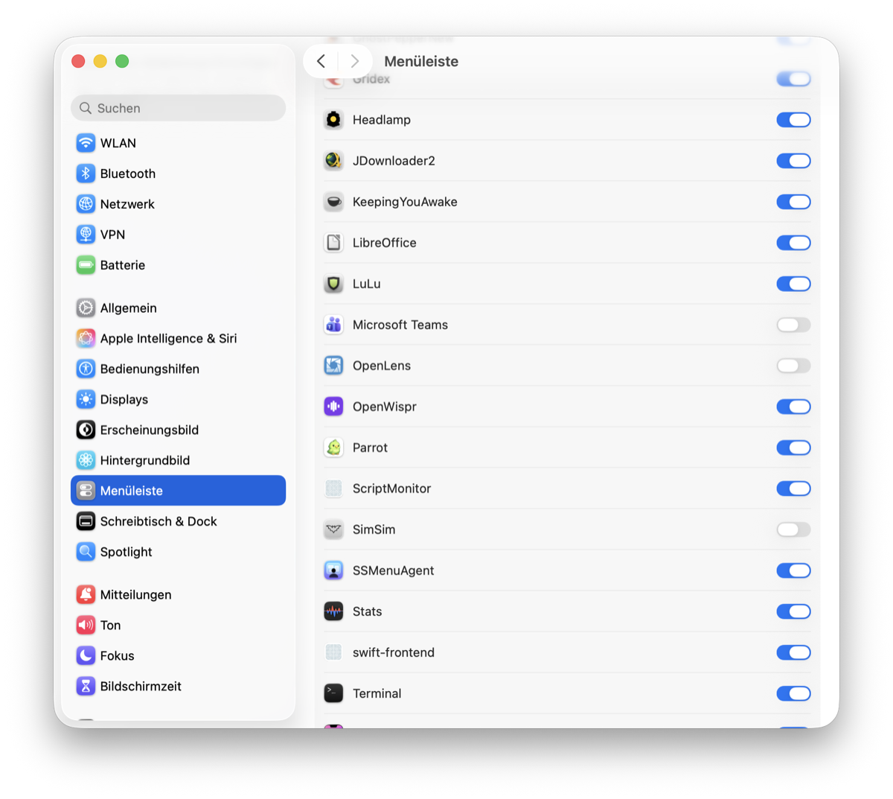

Bat Symbol Not Showing
An app I'd used for years launched perfectly on my new Mac — three copies of it at once, all alive in Activity Monitor — and not one of them showed its little bat icon in the menu bar. The code was fine. The app was fine. The Mac just refused to show it, and wouldn't say why.
A quick cast of characters. SimSim is a tiny free tool for iPhone developers: it sits in the Mac's menu bar — that strip at the top of the screen with the clock and the Wi-Fi symbol — and its icon is, for whatever reason, a little bat. Click the bat, and it takes you straight to the hidden folders where iPhone simulators store an app's data. (My dictation software insisted on transcribing it as "bad symbol not showing" all afternoon, which honestly also fit.)
"It worked on my other Mac"
On my old Mac: launch SimSim, bat appears, done. On the new one: launch SimSim, and… nothing. The process was running — Activity Monitor showed it. Launch it again, two processes. I had copies in the Downloads folder, in my personal apps folder, and in the system one — and I could run all three at once. Three healthy processes, zero bats.
I'd already ruled out the usual suspect. When a Mac blocks a downloaded app for security reasons, it doesn't run at all — and these were visibly running. So I handed the mystery to Claude, an AI that can operate my terminal, inside the app's own source code — the recipe an app is built from. That matters for later: the AI could read the app's code, build it from scratch, and interrogate macOS directly.
The theory graveyard
What followed was two hours of the AI producing genuinely good theories and me killing them with thirty-second experiments.
Theory one: the notch. My new MacBook has that black cutout at the top of the screen, and when the menu bar fills up, macOS silently drops icons behind it — they don't wrap, they just vanish. Plausible! The AI even proved the icon was being created: it watched macOS's internal diary while launching SimSim, and the diary confirmed the menu bar item existed. It just wasn't anywhere I could see.
So I removed another icon to make room and watched everything slide over. No bat. I sent a screenshot with the empty space circled. Theory dead.
Somewhere in here I noticed I'd become the assistant's assistant: I was taking screenshot after screenshot and feeding them in by hand. Why am I making the screenshots when Claude can look at the screen itself? I moved the session over to the Claude desktop app, which is allowed to see the screen — same conversation, new pair of eyes.
Theory two: an old saved position. macOS remembers where each menu bar icon sits, and SimSim had a position on file — maybe it was pinned behind the notch while everything else flowed around it? The AI deleted it and relaunched. No bat.
Theory three was the fun one. The AI went spelunking through macOS's hidden pile of saved settings and found that all ten menu bar slots for apps not made by Apple were marked hidden — and I remembered that I used to run Bartender, a menu-bar organizer app that hides icons for you, which I'd abandoned after too many crashes. A half-uninstalled Bartender leaving every icon switched off? That story fit so well. The AI flipped all ten flags back to visible, restarted the menu bar. No bat. The flags weren't even connected to anything — phantom leftovers.
Meanwhile the AI had built its own copy of SimSim from source and added a line of debugging that made the app report its own icon's position on screen. The answer came back: the icon sat at coordinates (0, −22) — map numbers for a spot just off the bottom of the visible screen. Not behind the notch — parked in the void where macOS puts things it has decided not to place. The app dutifully reported "I am visible." It was not.
"You don't understand"
And here the session revealed something about AI itself. When the theories ran out, the model I'd started with — Opus, one flavor of Claude — fell back to suggestions: shrink the screen's pixels to make the menu bar wider, install a third-party tool that manages menu bar icons, quit some apps to free a slot. Three tidy options, none of which touched the problem. This was never "I need more space." It was "the icon doesn't show."
So I switched to a stronger model — Fable — and had it read the entire session from the top. It came back with the same three ideas. Two different AIs had independently converged on the same wrong answers — not because they're stupid, but because when the evidence runs out, they reach for the most common internet answer, and the internet's answer to a crowded menu bar is those three. I told it, in exactly these words: you don't understand. Twice. The way out wasn't a fourth suggestion. It was me doing something no suggestion list contained: my own experiment.
"Why doesn't it work the same way for SimSim?"
The turning point wasn't a discovery. It was a question.
I stopped the VPN — its icon disappeared from the bar. Started it — the icon came back. Instantly, reliably, right in the free space that supposedly didn't exist. So macOS could place new icons on demand — just not SimSim's. Why doesn't it work the same way for SimSim?
That question changed everything, because it shrank the problem. This wasn't "the menu bar is broken" or "the Mac is full." Something was singling out this one app. And there was one more memory rattling around in my head: macOS lets you hold the Command key and drag an icon right out of the menu bar to get rid of it. I'd done exactly that months ago, to an icon I didn't want. Had I ever, maybe, done it to the bat?
"One idea we could try"
Here's the experiment that cracked it, and it was my favorite moment of the session. Every app on a Mac has a bundle identifier — an internal passport number, like com.dsmelov.SimSim, that macOS uses to recognize the app no matter where the file lives or what it's called. If macOS was holding a grudge, the grudge had to be filed under that name.
So: take the exact same app, byte for byte, change only the internal name — SimSim becomes SimSim2 — and launch it.
The bat appeared. Instantly.
Same code, same icon, same everything, different name badge: welcomed into the menu bar like nothing was ever wrong. Then I Command-dragged the clone's icon out and relaunched — now that name was cursed too. macOS wasn't judging the app; it was banning the name. That's why three copies in three folders all failed identically — they all wore the same badge.
"Found it"
Now we knew exactly what to look for: wherever macOS keeps its list of banished menu bar icons. The AI was digging through settings files; I asked whether it had tried a plain web search — maybe there's an official way to get a dragged-out icon back. And while it searched, I went poking through System Settings myself.
There it was. System Settings → Menu Bar. A list of every app that ever put an icon in the menu bar, each with its own on/off switch. And SimSim: switched off.

One flip. Bat's back. On this year's macOS, Command-dragging an icon out of the bar isn't a rearrangement anymore — it's a permanent per-app "never show this again," filed under the bundle identifier, in a settings pane neither of us knew existed. My months-old drag of some icon I don't even remember had survived onto a brand-new Mac via settings sync — and silently vetoed every future copy of SimSim.
Two hours of forensics, and the fix was a toggle. But here's the thing my whole afternoon confirmed: you only find the toggle once you've asked the right question. "Why doesn't my icon show" finds you nothing. "Why does macOS treat this one name differently" finds you the answer.
"While we are still in the project"
We were already inside SimSim's source code, so I brought up something that had annoyed me for years: click the bat, and the menu lags. Click it twice impatiently and it queues your clicks, opening and closing like a haunted door.
The AI read the code and found the reason in minutes: every single click rebuilt the entire menu from scratch — rereading the simulator folders and rebuilding every app's icon — while the user interface waited. The fix is a classic: do the slow work in the background, show the menu instantly from the last known state, and update it a moment later when the fresh data is ready. The very first click, before anything is cached, shows a small "Loading Simulators…" note instead of freezing.
Twenty minutes from complaint to fix. Click, menu, instantly, every time.
"Yes, open a PR"
The lag wasn't my Mac's problem — it was in SimSim itself, so every user of the app had it. We didn't stop at fixing my copy: we saved the change, uploaded it to my copy of the project, and opened a pull request — an offer of the change back to the original developer — as dsmelov/simsim#64. If it's accepted, everyone's bat gets snappy.
Looking back, this session had a shape I keep seeing in the best ones. You start with a problem. The way there is hairy — good theories, dead ends, a graveyard of plausible explanations. Then you find the right question, and the answer turns out to be embarrassingly easy. And once you're standing there with the solution, you don't just leave: you fix the other annoyance while the toolbox is open, and push it back upstream so everybody profits.
The bat is back in my menu bar. The menu opens instantly. And somewhere in macOS there's still a settings pane quietly holding grudges under names — go check yours: System Settings → Menu Bar. You might find an old friend switched off.